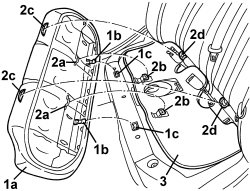

7050A20 ONE-PIECE REAR SEAT CUSHION - R.R.
- Path
- Procedures > 70 FITTINGS > 7050 REAR SEATS > 7050A REAR SEAT ASSEMBLY > 7050A20 ONE-PIECE REAR SEAT CUSHION - R.R.
- Kind
- repair procedure (removal / refitting; the operation number is the code)
- Applies to
- all engines; all production periods
- Interactive page
- https://sloeber94.github.io/elrnDB/alfa/159/en/#/939011325
Applies to: all engines; all production periods
 Removing
Removing
 Refitting
Refitting1. Lift up the cushion (1a) at the front and release the retainers (1b) from the seats (1c).
2. Push the cushion backwards until the brackets (2a) are released from the hooks (2b), then lift it up and extract it from the seat, releasing the two brackets (2c) from the retainers (2d).
3. If necessary, remove the sound insulation lining.

Applies to: all engines; all production periods
Refitting
Removing- Check that the cushion is not damaged.
- If removed, place the sound insluation lining in position.
- Check that the cushion retainers, hooks and mounting brackets are intact.
- Refit the cushion attaching the retainers, hooks and brackets correctly.
Topics that link to this page (55)
- S072 NOISE IN REAR SEAT CUSHION
- 1040A10 FUEL TANK - R + R AND DECANT FUEL
- 1040A14 FUEL TANK - R + R FOR REPLACEMENT
- 1040A66 FUEL LEVEL GAUGE FOR SUBMERGED PUMP ASSEMBLY - REPLACE.
- 1040A70 SUBMERGED PUMP ASSEMBLY COMPLETE WITH LEVEL GAUGE CONTROL - R + R
- 1040B30 FUEL SUPPLY PIPE (ONE) - R.R.
- 1040B36 REAR FUEL DELIVERY LINE - R.R
- 1040B52 FUEL RETURN PIPE (ONE) - R.R.
- 1040B56 REAR FUEL RETURN PIPE - R.R.
- 1080E61 FUEL VAPOUR PIPE FROM VAPOUR FILTER TO INTERMEDIATE COUPLING - R.R.
- 1080E43 PIPE FROM FUEL TANK TO ACTIVE CHARCOAL FILTER - R.R.
- 3340B67 RIGID PIPE FROM RIGHT REAR BRAKE CONNECTOR - R.R.
- 3340B69 RIGID PIPE FROM LEFT RER BRAKE CONNECTOR - R.R.
- 5505A48 CONTROL UNIT (DIGITAL NETWORK NODE) IN BOOT COMPARTMENT - R.R.
- 5505C28 ENGINE COMPARTMENT AND A.B.S BUILT-IN WIRING - R.R.
- 5505C41 PASSENGER COMPARTMENT WIRING - R.R
- 5570T27 AERIAL SUPPORT - R.R
- 5570T31 AERIAL COAXIAL LEAD - R R
- 5580C40 SIDE BAG SENSOR (ONE), LH OR RH - R.R.
- 5580C50 WINDOW BAG MODULE (ONE) LH OR RH - R.R
- 5580H16 REAR BUZZER OF PARKING OBSTICLE DETECTION DEVICE R R
- 5580T40 BOSE SOUND SYSTEM SUBWOOFER - R.R.
- 7010A14 REAR SIDE DOOR - ADJUST CENTERING AND MOULDING - INCLUDES ADAPTATION OF HINGES AND SEALS ON DOOR COMPARTMENT
- 7010A24 REAR SIDE DOOR HINGES (BOLTED) - REPAIR OR REPLACE WITH DOOR REMOVED
- 7025B34 BOOT LID EMERGENCY OPENING CONTROL - R.R.
- 7030B12 SLIDING ROOF (ASSEMBLY) - R+R
- 7030B40 DRAINAGE CHANNEL - R R
- 7030B50 SUN ROOF SLIDING GUIDE (ONE), LH OR RH - R.R
- 7035B14 REAR WINDOW GLASS - R.R INCLUDES CLEANING HOUSING
- 7035C14 FIXED REAR SIDE WINDOW (ONE) LEFT OR RIGHT - R.R INCLUDES CLEANING HOUSING
- 7040H10 ROOF PANEL LINING - R.R.
- 7040H16 ROOF PANEL LINING FOR VERSIONS WITH SUN ROOF - R.R
- 7040H36 CENTRE PILLAR LOWER ELEMENT (ONE), LEFT OR RIGHT - R.R
- 7040H38 CENTRE PILLAR UPPER ELEMENT (ONE), LEFT OR RIGHT - R.R
- 7040H42 REAR PILLAR TRIM (ONE), LEFT OR RIGHT- R.R
- 7040H80 REAR PARCEL SHELF - R.R.
- 7040L44 REAR DOOR RUNNING BOARD (ONE), LEFT OR RIGHT - R.R.
- 7050A10 REAR SEAT - R+R
- 7050A13 SPLIT REAR SEAT LEFT BACKREST - R.R.
- 7050A14 SPLIT REAR SEAT ASSEMBLY - R+R
- 7050A15 SPLIT REAR SEAT RIGHT BACKREST - R.R.
- 7050A19 REAR SEAT BACKREST - R.R
- 7050A42 REAR BACKREST CATCH DEVICE (ONE) - R+R
- 7050A43 SPLIT REAR SEAT ABCKREST ATTACHMENT/LOCKING DEVICE - R.R.
- 7050A47 SIDE PANEL ONE OF REAR SEAT SQUAB LH OR RH R R
- 7050A56 REAR SEAT CUSHION FRAME - R.R.
- 7050D20 REAR SEAT CUSHION TRIM - R.R.
- 7050D30 TRIM FOR REAR SEAT BACKREST - R.R.
- 7050D34 TRIM FOR LEFT REAR SEAT BACKREST (TWO SEATER) - R.R.
- 7050D36 TRIM FOR RIGHT REAR SEAT BACKREST (INDIVIDUAL) - R.R.
- 7065A10 FRONT SEAT BELT (ONE) LEFT OR RIGHT - R.R.
- 7065B10 REAR SEAT BELT (ONE), LEFT OR RIGHT - R.R.
- 7065B14 ANCHORAGE ROD FOR (ONE) REAR SEAT BELT LEFT OR RIGHT - R.R.
- 7065B18 CENTRE REAR SEAT BELT - R.R.
- 7065B24 CENTRE REAR SEAT BELT ANCHORAGE MECHANISM LINK - R.R.